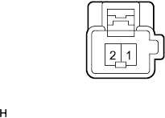
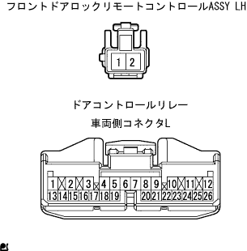

パワースライドドア アシスト作動しない(ドアコントロールスイッチでは正常に作動する) |
参照| 手順1 | 機能点検 |
イージークローザーは作動するか点検する。
|
| ||||
| OK | |
| 手順2 | フロントドアロックリモート コントロールASSY LH単体点検（ハンドルスイッチ点検） |
|  |
導通点検
SST(トヨタエレクトリカルテスター)を使用して、コネクタ1端子←→2端子間の導通を点検する。
| 端子番号 | 測定条件 | 基準 |
| 1←→2 | 初期位置 | 導通なし |
| 1←→2 | ハンドルを引く | 導通あり |
|
| ||||
| OK | |
| 手順3 | ワイヤハーネス点検 |
|  |
導通点検
ドアコントロールリレーののコネクタBおよびフロントドアロックリモートコントロールASSY LHのコネクタを切り離す。
SST(トヨタエレクトリカルテスター)を使用して、ドアコントロールリレー車両側コネクタL8端子←→フロントドアロックリモートコントロールASSY LH車両側コネクタ1の導通を点検する。
|
| ||||
| OK | ||
| ||